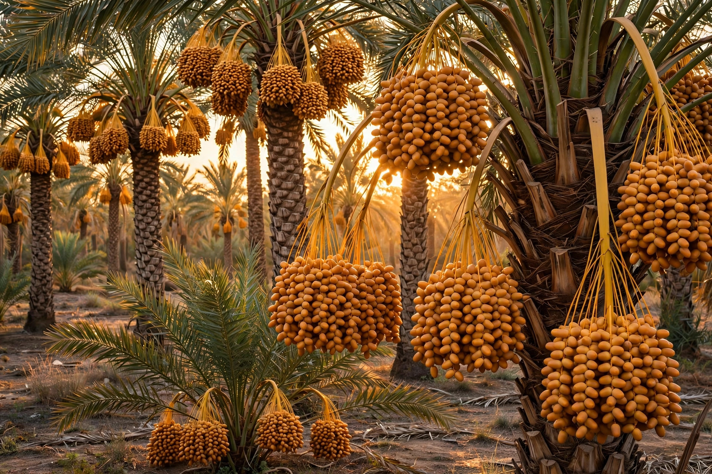

From Wikipedia, the free encyclopedia
| Phoenix dactylifera | |
|---|---|
 | |
| Kingdom: | Plantae |
| Order: | Arecales |
| Family: | Arecaceae |
| Genus: | Phoenix |
| Species: | P. dactylifera |
| Binomial authority | L. |
Phoenix dactylifera, commonly known as the date palm, is a flowering plant species in the palm family, Arecaceae, cultivated for its sweet edible fruit, the date. It is one of the oldest cultivated tree crops: date palms have been grown in the Mesopotamian region for at least 6,000 years, and the tree is central to the economies and cuisines of the Middle East and North Africa. The specific epithet dactylifera means "date-bearing" (Greek daktylos, "finger" or "date," and Latin fero, "I bear").
The date palm is a tall, single-stemmed tree, typically 21–23 m tall, with a crown of pinnate fronds up to 6 m long. It is dioecious — male and female flowers grow on separate trees — and growers plant one male to roughly 50–100 females, pollinating by hand for reliable crops. A mature female palm can yield 60–100 kg of fruit per year. The tree is remarkably tolerant of heat and drought, fruiting best where mean temperatures exceed 30 °C and water is available, which is why it thrives in oases and irrigated desert valleys.
Major producers include Egypt, Saudi Arabia, Iran, Iraq, Algeria, Pakistan and Tunisia. Dates are harvested in stages from summer into autumn; varieties include Medjool (large, soft, prized), Deglet Nour ("date of light," translucent and sweet), Barhi and Ajwa. Propagation is usually by offshoots (khaltas) taken from the base of mature palms, preserving cultivar identity, rather than from seed.
Beyond the fruit, every part of the palm is used: the trunk for timber and construction, the fronds for thatching, matting and baskets, the fibres for rope and brushes, and the sap for syrup or fermented drinks. Dates are eaten fresh or dried and feature in countless dishes, from Middle Eastern ma'amoul cookies to North African tagines. The tree has deep cultural and religious significance in Judaism, Christianity and Islam — the lulah (date palm frond) is one of the Four Species of Sukkot.